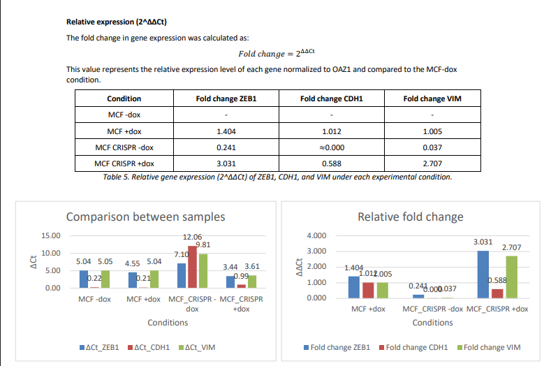
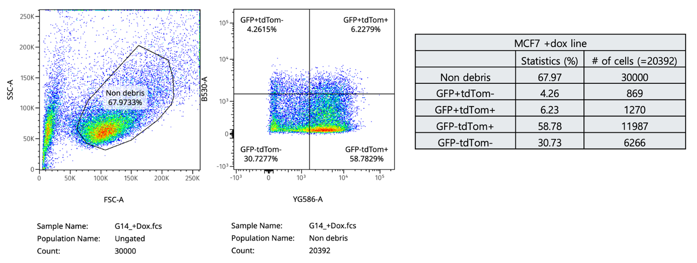
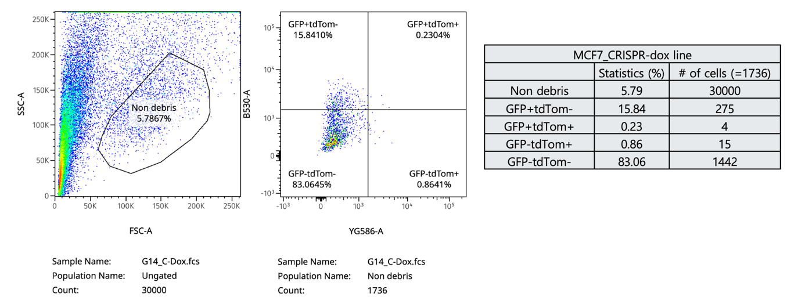
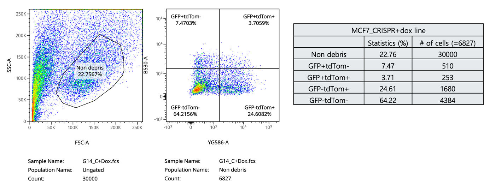

ZEB1-MEDIATED EMT IN MCF7 CELLS
A laboratory project examining how inducible ZEB1 expression and CRISPR perturbation influence epithelial–mesenchymal transition in MCF7 breast cancer cells.
Research question
How does ZEB1 induction alter epithelial and mesenchymal marker states, and how is that response changed when ZEB1 is disrupted?
Approach
RNA was purified from inducible and CRISPR-edited MCF7 conditions. ZEB1, CDH1 and VIM expression was examined by qRT-PCR, while GFP/tdTomato reporters were quantified by flow cytometry.
- RNA purification
- qRT-PCR
- CRISPR condition comparison
- Flow cytometry
Interpretation
Doxycycline-induced conditions showed a strong shift toward the mesenchymal reporter state. CRISPR-edited conditions showed attenuated or altered responses, highlighting both the role of ZEB1 and the importance of technical controls when interpreting gene-editing experiments.
Selected visuals



